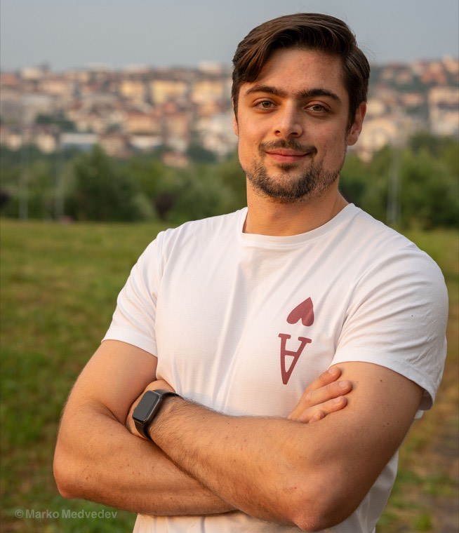

Marko Medvedev
PhD student, Department of Mathematics
The University of Chicago
Email [last name] at uchicago dot edu
About
I am a fifth-year PhD student at The University of Chicago, advised by Professor Nathan Srebro and Professor Alexander Razborov. I am interested in the theory of machine learning and deep learning. My latest work is on data-centric machine learning. Before joining UChicago, I obtained my Bachelor of Arts in Mathematics from Princeton University.
Publications
-
Learning through Internalization
-
Positive Distribution Shift as a Framework for Understanding Tractable Learning
-
Shift is Good: Mismatched Data Mixing Improves Test Performance
-
Weak-to-Strong Generalization Even in Random Feature Networks, Provably
-
Overfitting Behaviour of Gaussian Kernel Ridgeless Regression: Varying Bandwidth or Dimensionality
-
Refinement of Chebotarev's density theorem in SL2(Z)